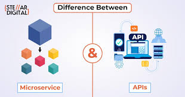

Microservices and API development are complementary concepts in modern software engineering. Microservices are an architectural style for building an application as a collection of small, independent services, each focused on a specific business function.
APIs (Application Programming Interfaces) are the mechanisms that enable these microservices, and other software components, to communicate with each other.
